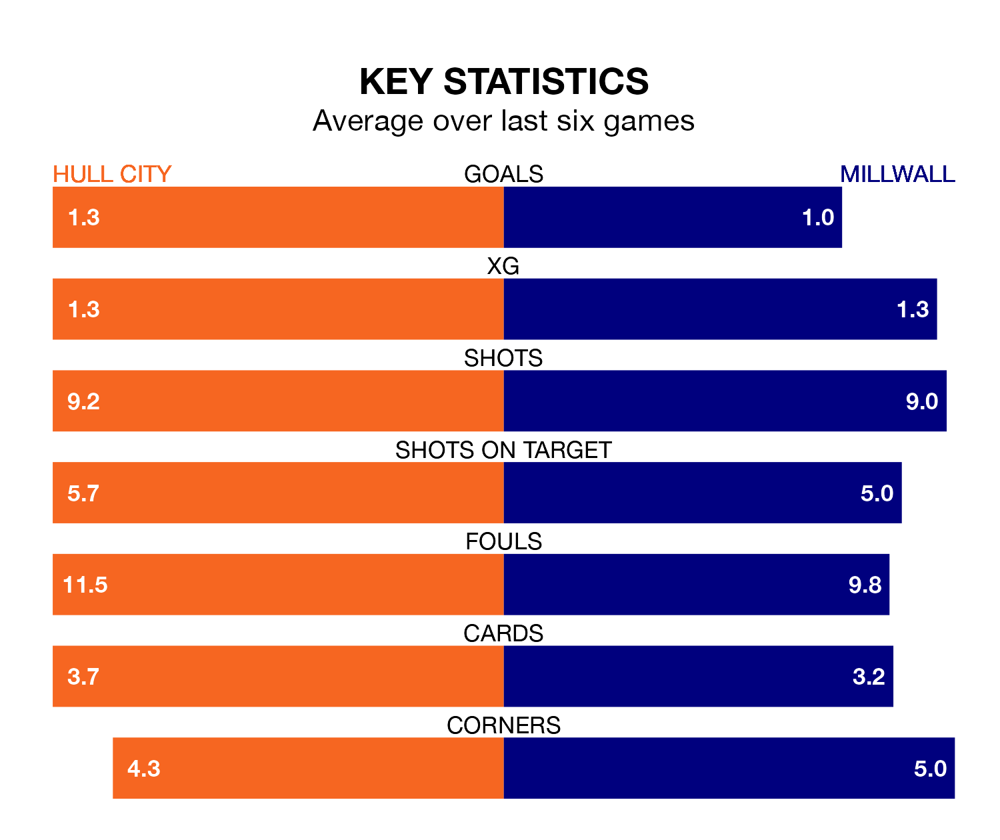

Millwall travel to Hull City on Saturday in EFL Championship.
The visitors come into the game on the back of a draw in their last match, having tied with Preston North End 1-1 at home, with a goal from Zian Flemming.
The Tigers, meanwhile, won their last match, 1-0 against Sunderland, with their goal scored by Fabio Carvalho.
In the last 10 years, Hull and Millwall have played each other on 12 occasions. Hull won three of them, Millwall four, and they drew five times.
On average, the Tigers scored 1.1 goals and the Lions 1.2 in those matches.
Their last meeting was on October 7, when they played out a 2-2 draw.
With 30 goals in 29 games so far this season, Millwall are scoring at below the league average rate with 1.0 goals per game. But they are conceding fewer than average too, letting in 37 goals at a rate of 1.3 per game.
Hull, meanwhile, are above average scorers, with 1.5 goals per game, compared to a league average of 1.4. They have conceded 1.4 goals per game.
City are in disappointing form in EFL Championship, with two wins and four losses from their last six games.
With three wins and a draw over that period, the Lions's form is better – they have taken 10 points from 18, compared to the Tigers' six.
The home side are eighth in the table after 28 games, of which they have won 12 and drawn six, earning 42 points.
The visitors are nine places behind Hull in 17th, with eight wins and nine draws putting them on 33 points.
Updated: 09:21 (UTC), 30/01/24